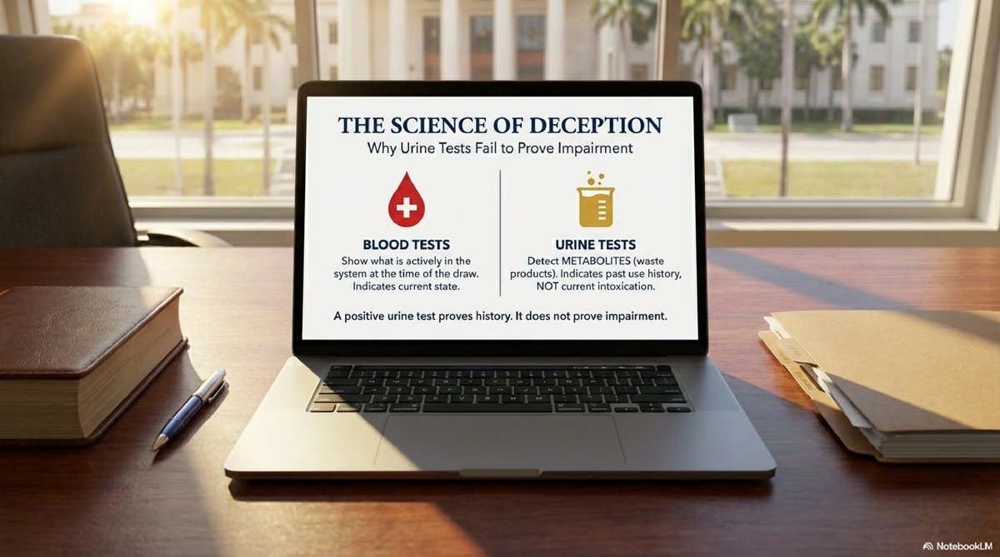
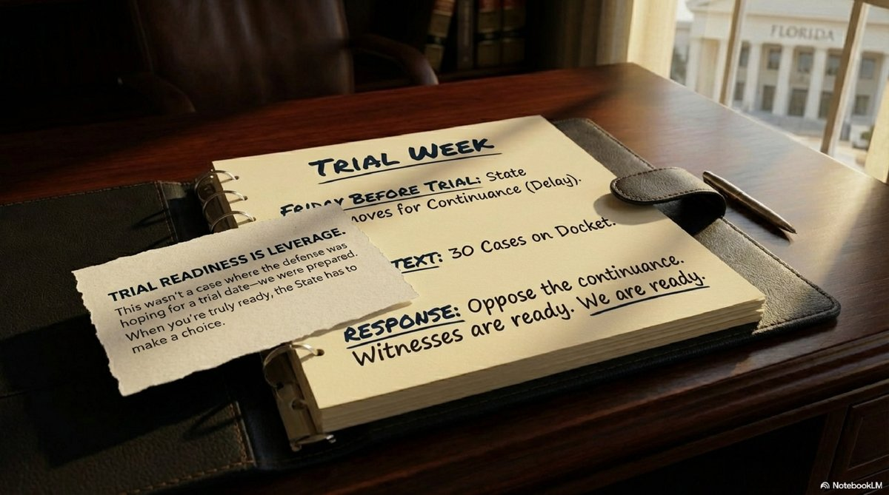

Trial-Ready Defense Forces Favorable DUI Resolution in Brevard
Published on
The Friday before trial, the prosecutor told me they planned to request a continuance. By that point, we had coordinated multiple defense witnesses who were ready to appear for trial week. This wasn't a case where the defense was hoping for a trial date — we were prepared. And when you're ready for trial, the State has to make a choice.
The Case: Two DUIs, Two Leaving the Scene Charges, and Child Neglect
The case started with serious allegations filed in Brevard County:
- DUI causing property damage (F.S. 316.193(3)(c)1)
- Second DUI with a person under 18 in the vehicle
- Two counts of leaving the scene of a crash with property damage
- Two counts of child neglect without great bodily harm
- Three traffic citations (careless driving)
Early in the case, we were able to get the child neglect charges disposed of by the prosecutor. That mattered — it changed the entire posture of the case and removed the emotional weight from the courtroom. But we were still facing two DUI allegations and two leaving-the-scene charges.
The Science Problem for the State
Here's what made this case defendable: the State's own evidence undermined their impairment theory.
Key Evidence Point #1: Breath Test Was 0.000
That's right — zero alcohol. Yet the State still prosecuted the case as a DUI, claiming impairment from other substances.
The officer was a Drug Recognition Expert (DRE) certified by the International Association of Chiefs of Police. His certification was current at the time of arrest, but he'd only been certified for about one year — meaning he had limited real-world DRE evaluation experience.
After the arrest, the State sent a urine sample to the FDLE laboratory in Orlando. The results came back showing:
- 11-Nor-9-carboxy-delta-9-tetrahydrocannabinol — the inactive THC metabolite
- Alpha-hydroxyalprazolam — a metabolite of Xanax
- Alpha-hydroxytriazolam — a metabolite of Halcion
- Amphetamine — which can come from prescription Adderall
Notice the word metabolite. That's not the active drug. That's what's left over after your body processes the drug — sometimes days or even weeks after use.
Metabolites Don't Prove Impairment
This is a critical legal and scientific distinction that prosecutors often gloss over when they see a positive urine test.
The Problem with Urine Tests in DUI Cases
Urine tests detect metabolites, not active drugs. Blood tests, by contrast, show what's actively in your system at the time of the draw.
The THC metabolite found in this case — 11-Nor-9-carboxy-delta-9-THC — can be detected in urine for 3 to 30 days after marijuana use. In heavy users, it can persist for up to 90 days. The presence of this metabolite cannot establish impairment on the date of the alleged offense.
The same principle applies to the benzodiazepine metabolites found in the urine:
- Alpha-hydroxyalprazolam is the metabolite of Xanax, not the active drug itself
- Alpha-hydroxytriazolam is the metabolite of Halcion, not the active drug
- Both could have been present from use days before the alleged DUI
As for the amphetamine? If the client had a valid prescription for Adderall (commonly prescribed for ADHD), then therapeutic use is not impairment. The burden would shift to the State to prove impairment despite the prescription — something they couldn't do when the observations didn't match the narrative.

The Key Moment: Trial Readiness Is Leverage
The defense theory was clear: the observations the officer described didn't match alcohol impairment, and the urine metabolites didn't prove active impairment at the time of driving. There was a legitimate alternative explanation for what happened that night — one that didn't equal a DUI.
We prepared witnesses. We coordinated schedules. We were ready to cross-examine the DRE on his protocol, his training versus his actual experience, and his understanding of metabolite science.
Then, on the Friday before trial, the prosecutor said they intended to request a continuance.
At calendar call that Monday morning, there were roughly 30 cases on the docket. When the State moved for a continuance, we opposed it.
Because fairness isn't optional when the State is the one bringing charges. And when your witnesses are present and ready to testify, the State should have to make a decision: prove the case now, or resolve it fairly.

The Result
The case resolved with the kind of outcome that clients hire defense attorneys to achieve:
Final Disposition
- DUI with property damage → Reduced to reckless driving with a withhold of adjudication
- Leaving the scene → Withhold of adjudication
- Second DUI charge → Nolle prosequi (dropped)
- Second leaving-the-scene charge → Nolle prosequi (dropped)
- Three careless driving citations → All dismissed
No DUI conviction. No adjudication. And multiple serious charges completely dropped.
What This Case Demonstrates
A lot of defense work is invisible to the outside world. The hours spent analyzing FDLE lab reports. The witness coordination. The research into metabolite detection windows and DRE protocol requirements. The trial preparation that forces the State to re-evaluate their position.
But when you're ready for trial — truly ready — the State has to make a choice. And sometimes that choice is to resolve the case fairly rather than roll the dice in front of a jury.
Key Defense Strategies in This Case:
- Challenge the science — metabolites don't prove impairment
- Cross-examine DRE training and experience — protocol compliance matters
- Oppose unjustified continuances — fairness works both ways
- Be trial-ready early — leverage comes from preparation, not bluffing

Jeff Lotter
Criminal Defense Attorney | Former State Trooper
Jeff Lotter is an Orlando criminal defense attorney and former Florida Highway Patrol trooper. He uses his law enforcement background to build stronger defenses for clients facing criminal charges.
Related Articles
Facing DUI Charges in Central Florida?
If you're facing a DUI allegation — especially where the State is claiming drug impairment based on a urine test or where the facts don't match their theory — our office can help you understand the evidence, the science, and the path to the best possible outcome.
Free consultation. Orlando office. Serving Orange, Seminole, Osceola, and Brevard Counties.